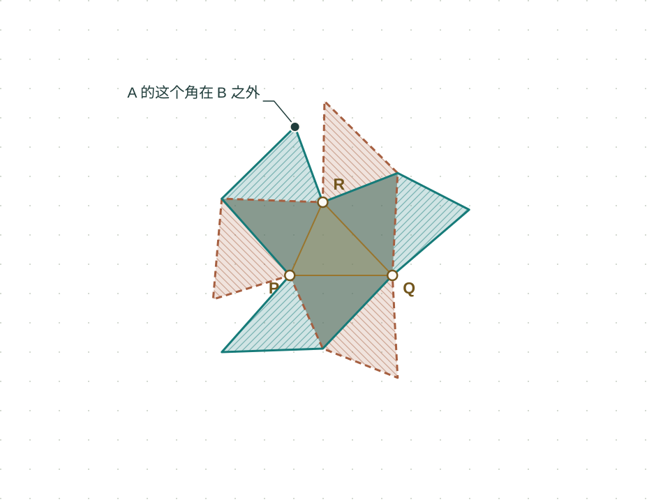

进一步看 / NON-ISOMETRIC
同样的七块三角形，
拼成不同的形状。
A 会不会只是换了个方向的 B？把 A 移动、旋转、翻转，叠到 B 上试试看。再借助三个凹角，理解为什么任何刚性移动都不能让它们完全重合。
试着让两个轮廓重合
同一比例 · 大小固定这一步的数学 / 平移 → 旋转 → 反射
每个操作都在选择一个等距变换。
平移改变 b，旋转或反射改变正交矩阵 R。距离与角度保持不变，因此任何完全重合，都必须保持三个凹角之间的距离。
重合比例描述当前摆法；唯一性论证需要三个凹角的距离约束。
所用数学：正交矩阵 · 距离不变量 · 三点对应的唯一性

拖动青绿色的 A。键盘：选中图后，方向键移动，R 旋转 15°，F 翻转，Home 对齐三个凹角；也可使用右侧滑块。
中心三角形已对齐；外轮廓仍有未重合区域。
百分比描述当前摆法；下方的几何论证才排除所有可能的刚性摆法。
从尝试走向解释
为什么能排除
所有的摆放方式？
试几次没成功，还不能算证明。我们要找到：如果真的能完全重合，哪些几何特征一定得对应？这对轮廓恰好提供了三个标记。
轮廓本身能识别三个凹角。
每个轮廓恰好有三个向内凹的角，记为 P、Q、R，内角都大于 180°。刚性移动保持角度，因此 A 的三个凹角必须对应到 B 的三个凹角。
这些角属于外轮廓。即使擦掉全部内部细线，仍然能找到它们。
三条边长度不同，把对应关系固定下来。
连接 P、Q、R，就得到中心的不等边三角形。它的三条边长度各不相同，因此每个顶点都有自己独特的一对相邻边长：P 只能对应 P，Q 只能对应 Q，R 只能对应 R。
| 凹角 | 相邻的两条边长 |
|---|---|
| P | 1.097 & 1.400 |
| Q | 1.379 & 1.400 |
| R | 1.097 & 1.379 |
三个不共线的点，一旦对应关系固定，刚性变换就唯一确定。这个判断也包括反射：翻转不能再提供另一套保持这些距离的对应。于是，我们只剩下一种候选摆法。
唯一候选下，外围仍然对不上。
中心三角形对齐后，中心一块和相邻的三块能够重合，但外围的分支仍然不同。图中标出的 A 的尖角落在 B 之外，因此这个摆法没有让整个区域重合。
任何完全重合都必须采用这一种摆法，而这一种摆法已经失败。因此，任何平移、旋转或反射，都不能让 A 与 B 完全重合。这就是非等距（non-isometric）。
这三个精确数值互不相同。六种顶点对应中，只有一种保持全部距离；三个不共线的点把等距变换固定下来，再用未重合的外围尖角排除唯一候选。
两件分别需要证明的事